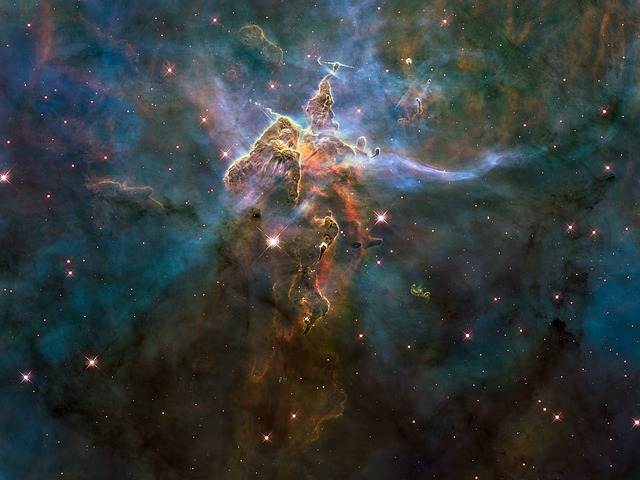

Yo, wassup? Has anyone ever told you how cool space is? It's super cool! Space is massive! It's so big, that you probably couldn't even get to the end of it, even if you travelled for a full year! You might not get to the edge of space if you travelled for ten years!!! You know how long ten years is? It's very long.
Half of this picture is space, and that half is really cool. The other half is Earth, which isn't as cool.
There are clouds in space? Why didn't I know about this? Just kidding, I knew that their are clouds in space, because I know everything about space. The clouds are called nebeauleas. Nebeuleas are my favorite type of clouds, because they are space clouds, and everything in space is cool.

Nebeuleas are so cool, and they sometimes hide in them in my favorite show, Star Trek: Bald Guy in Space!
There are a ton of stars in space! I bet there are more than 100 stars! In fact, I bet there are more than 1000 stars, all around space! Did you know that we can't see all the stars in space from here on Earth? (I did, because I know everything about space). That's because Earth is super lame. I wish I was in space, so I could see all of the stars. When I grow up, I'm gonna be an astronut, so that I can go all around space, and go see all the stars, just like the bald guy from my favorite show, Star Trek: Bald Guy in Space!

Here is a picture of a lot of stars, which is super cool. But the big mountain is blocking some of the stars, because the mountain is a jerk.
If you like space as much as I do, and want to pretend to go into space like I do every day, here is a super realistic space simulator, that will teach you a lot about being an astronut. I practice on it every day, so that when I grow up, I will be ready to go into space right away, and I won't have to go through training.